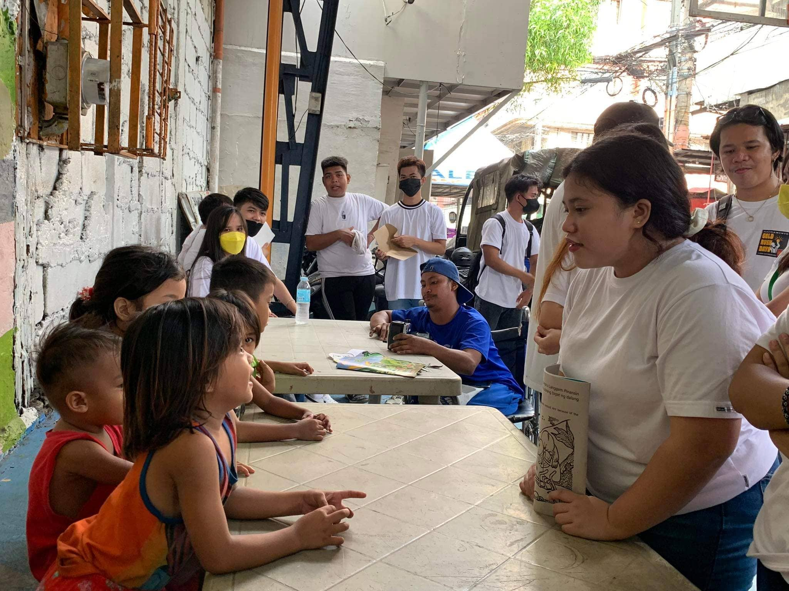

Images in HTML
My Strong Points

Good with kids,Friendly, and Productive(sometimes hehe)
I can handle a lot of kids because i enjoyed playing with them and i have some experiences with baby sitting, so during our community service i'm always active and i'm also friendly with all of my classmate everytime or i can fit in every group of friends because i'm very talkative type of person and last is productive especially if i have this kind of responsibilities i've always make sure that i'll give my best.